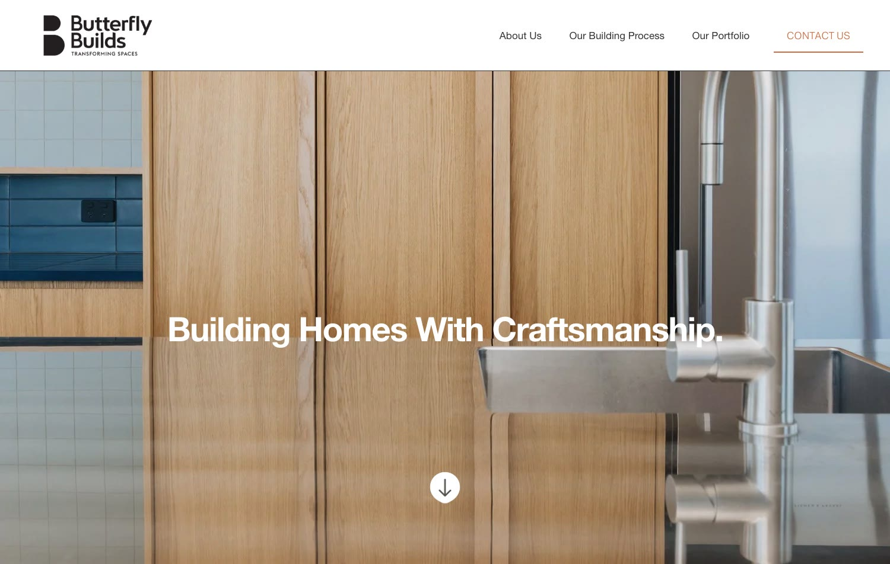
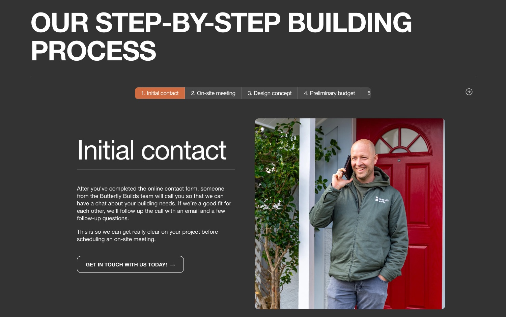
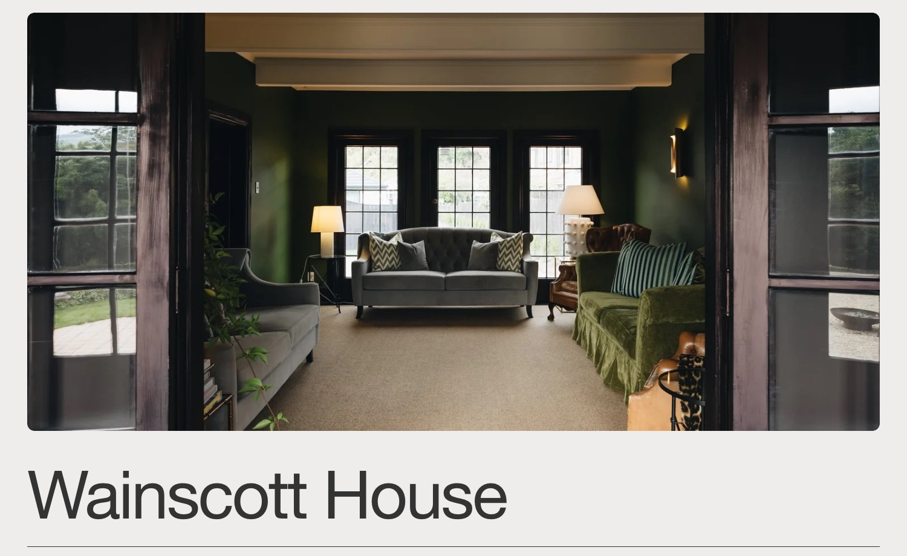
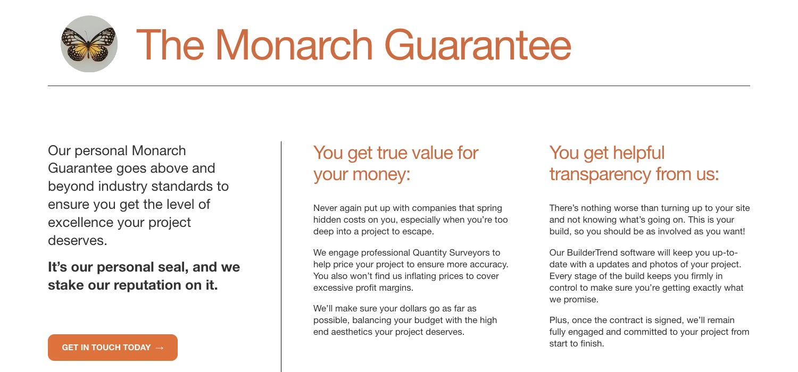

At a glance
What they needed
Butterfly Builds has two decades of renovations, new builds and alterations across two regions, and a brand built on integrity. The old site undersold all of it.
What I did
I rebuilt the structure of the site around process and proof, and updated the look to suit the houses, with a restrained palette, big photography and custom-drawn buttons.
What changed
A site that finally matches the standard of the building work.
Process and proof

I wanted the work to have a home that looked as carefully made as the joinery.
The process page sets out the step-by-step building process in numbered tabs, starting with the initial contact.
The same page answers the questions people ask before they begin, from consent to hiring a Licensed Building Practitioner.
Five named projects
Five named projects, from Rothsay to Wainscott House, make the case for the work.
Each has its own page. Wainscott House shows the care taken to preserve the original wall panelling.

Trust, easy to find

Master Builder and LBP credentials and client reviews are all easy to find, and the Monarch Guarantee has its own block on the about page.
The result
Their houses are finished properly, and I wanted the website to be too.